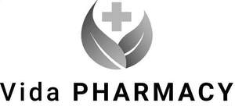

Trade Mark Journal No.2025/030 25 July 2025
UK00004234929 16 July 2025 (35,44)
Mark 1
Mark 2

- Class 35
- Advertising, marketing and sales promotions; online ordering services; retail services and wholesale services connected with the sale of skin care preparations, make-up, moisturisers, body cleaning and beauty care preparations, pre-moistened cosmetic wipes, cosmetics and cosmetic preparations, cosmetic kits, compacts containing make-up, sunscreen creams, hair treatment preparations, soaps and gels, shampoos, hair conditioners, perfumery and fragrances, nail polish, eyelashes, deodorants and antiperspirants, hair removal and shaving preparations, dentifrices and mouthwashes, aromatherapy oil, aromatic oils, aromatics, lip balm, cotton wool for cosmetic and medical use, bleaching and laundry preparations, cleaning, polishing, scouring and abrasive preparations, descaling preparations for household purposes, soaps, perfumery, first aid dressings, first aid kits, first aid boxes sold filled, sanitary preparations and articles, disinfectants and antiseptics, disinfectant and medicated swabs, anti-viral agents, anti-bacterial preparations, medicated and sanitising soaps and detergents, sanitizing wipes, medical dressings, coverings and applicators, bandages (hygienic), medical and surgical tape, medicated hair and skin care preparations, medicated lip balm, pharmaceuticals and natural remedies, vitamin and mineral preparations, veterinary preparations, dietary supplements, nutritional supplements, infant formula, food for babies and infants, pacifiers for babies, testing apparatus for medical purposes, condoms, contraceptive devices, elastic bandages, support bandages, nail files and clippers, manicure sets, pedicure sets, nail buffers for use in manicure, hand operated tools, scissors, tweezers, electric and non-electric depilatory apparatus, electronic devices used to exfoliate skin, razors, razor blades, cosmetic bags, cosmetic purses, holdalls, bags, purses, cosmetics applicators, brushes, combs, toothbrushes, cosmetics brushes, eyebrow brushes, make-up sponges, containers for cosmetics, cosmetic bags [fitted], cosmetic sponges, shaving brushes, hair bands, hair slides, hair grips, hair styling and drying appliances, tissues, sweets, confectionery, supports for medical purposes, face masks for medical and surgical use, protective face masks for medical use, surgical masks, clothing, headgear and footwear for medical personnel and patients, medical gloves, surgical gloves, medical and veterinary apparatus and instruments, disposable and cloth nappies, diapers, baby wipes, food and beverages, games, toys and playthings, batteries, chargers, headsets, telecommunications cables, cables, power connectors, telecommunication equipment, clothing, footwear and headgear, eyewear, cases for eyewear, hot water bottles; business management; business administration; consultancy, information and advisory services relating to all the aforesaid services.
- Class 44
- Pharmacy services; nutrition consultancy; medical and healthcare services; physician services; medical and healthcare screening services; healthcare consultancy services; alternative medicine services; medical and healthcare information; vaccination services; medical treatment services; preparation and dispensing of medications; phlebotomy services; consultancy, information and advisory services to all the aforesaid services.
Meadowgarth Ltd
Representative: Trademark Eagle Limited